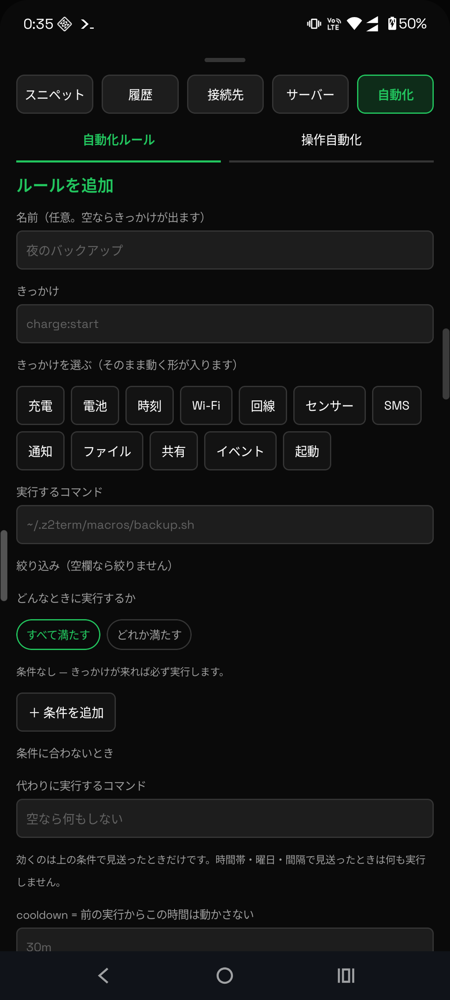

使いこなしガイド / 3. 自動化
3. 自動化（z2-when）
「こうなったら、これを走らせる」を 1 行で登録します。 登録したルールはアプリを閉じても、端末を再起動しても生き残ります。 見張り続けるスクリプトを自分で書く必要はありません。
書き方はこれだけ
z2-when <きっかけ> [条件...] run <コマンド>
# 充電を始めたらバックアップ z2-when charge:start run ~/.z2term/macros/backup.sh # 毎朝 7 時に z2-when time:daily=07:00 run ~/.z2term/macros/morning.sh # 自宅の Wi-Fi に繋がったときだけ、1 時間に 1 回まで z2-when net:online if=ssid=Home cooldown=1h run ~/.z2term/macros/sync.sh
登録・確認・停止は次のとおりです。
z2-when list # 登録したルールの一覧（id が出ます） z2-when log <id> # そのルールが実行した記録 z2-when fired # 直近の発火（見送った理由も出ます） z2-when off <id> # 一時停止 / on で再開 z2-when remove <id> # 削除（all で全部）
画面からも操作できます


きっかけの一覧
| きっかけ | いつ動くか | 前もって要るもの |
|---|---|---|
charge:start / charge:stop | 充電の開始 / 停止 | システムイベント検知 |
battery:below=20 / battery:above=80 | 電池がその値を跨いだ瞬間 | システムイベント検知 |
time:daily=07:00 | 毎日その時刻 | — |
time:at=18:30 | 次のその時刻に 1 回 | — |
time:every=30m | その間隔ごと（最短 1 分） | — |
time:cron='0 3 * * *' | cron 式（空白を含むので要クォート） | — |
wifi:connect / wifi:ssid=Home | Wi-Fi 接続 / その SSID へ接続 | システムイベント検知 |
net:online / net:offline | 通信できる回線ができた / 無くなった | システムイベント検知 |
share:any / share:ext=pdf | 他のアプリから「共有」で送られた | — |
boot | 端末の起動が終わった | — |
sms:otp / sms:from=… | SMS が届いた | SMS 検知 |
notify:category=call / notify:pkg=… | 通知が届いた（着信・不在着信も種別で拾えます） | 通知アクセス |
sensor:shake / sensor:light<10 | 振った / 明るさが変わった | システムイベント検知 |
file:new=/sdcard/Pictures/Screenshots | そのフォルダに新しいファイルが来た | システムイベント検知 |
event:headset_plugged | 端末イベントを名前で（一覧は z2-when events） | ものによる |
「前もって要るもの」は ⚙設定で ON にしてください。
システムイベント検知・SMS 検知・通知アクセスは、どれも既定では OFF です
（勝手に見張らないため）。ON にしていないきっかけは、登録できても動きません。
きっかけの綴りを間違えると、登録の時点で断ります。
通してしまうと「一覧に並ぶのに一生動かないルール」になり、原因を追えなくなるためです。
条件で絞る
きっかけの直後、run より前に置きます。どのきっかけにも同じように効きます。
| 書き方 | 意味 |
|---|---|
if=wifi,!screen | そのときの状態で絞る（カンマは「かつ」、! は否定）。
使えるのは z2-state で見える項目（ssid=Home level<30 temp>40 なども） |
cooldown=1h | 前に実行してからこの時間は動かさない |
between=22:00-07:00 | その時間帯だけ（日をまたいでも書けます） |
days=mon-fri | その曜日だけ |
# 平日の夜、画面が消えているときだけ、30 分ごとに
z2-when time:every=30m if=!screen between=22:00-07:00 days=mon-fri run ~/.z2term/macros/nightly.sh
何が起きたかを受け取る
走ったコマンドには、何がきっかけだったかが環境変数で渡ります。
| 変数 | 入るもの |
|---|---|
Z2_WHEN_TRIGGER | 登録したきっかけの文字列（全部共通） |
Z2_WHEN_LEVEL / Z2_WHEN_SSID | 電池残量 / Wi-Fi 名 |
Z2_WHEN_SHARE / _KIND | 共有された中身 / 種別（text か file） |
Z2_WHEN_SMS_FROM / _BODY / Z2_WHEN_OTP | 送信元 / 本文 / 抽出したワンタイムコード |
Z2_WHEN_NOTI_PKG / _TITLE / _TEXT / _CATEGORY | 通知のアプリ / 題名 / 本文 / 種別 |
Z2_WHEN_FILE / Z2_WHEN_DIR | 増えたファイル / そのフォルダ |
共有ファイルの
Z2_WHEN_SHARE は「パス」ではありません。
シェルに貼るための文字列で、~ は展開されておらず、空白を含む名前は引用符つき、
複数ファイルは空白区切りで並びます。[ -f "$Z2_WHEN_SHARE" ] と書くと必ず外れ、
しかもログには何も出ません。分解の例は
マクロガイドに
そのまま貼れる形で載せてあります。Z2_WHEN_* をコマンドの中で使うときは、
run '...' のように単一引用符で囲んでください（登録した時点で展開されてしまうため）。そのまま使える例
# 1. スクリーンショットを撮ったら、その場で名前を聞いて付け直す z2-when file:new=/sdcard/Pictures/Screenshots run ~/.z2term/macros/shot.sh # 2. 届いたワンタイムコードを自動でコピー（SMS 検知が要ります） z2-when sms:otp run 'z2-clip set "$Z2_WHEN_OTP"; z2-toast "コードをコピーしました"' # 3. 電話帳に無い番号からの着信を控えておく（通知アクセスが要ります） z2-when notify:category=call cooldown=20s run ~/.z2term/macros/unknown-call.sh # 4. 共有したものを裏で仕分ける z2-when share:any run ~/.z2term/macros/zap.sh # 5. マナーモードにしたら Wi-Fi テザリングも切る、のような組み合わせ z2-when 'event:ringer_*' run 'z2-toast "マナーモード: $Z2_WHEN_EVENT"'
動かないときは
z2-when listに居るか。登録できていなければ綴りが違います。z2-when firedを見る。発火はしたが条件で見送った場合、skip:ifskip:cooldownskip:betweenskip:daysと理由が出ます。z2-when log <id>を見る。走った結果（エラー出力も）がここに残ります。- 検知が ON か。⚙設定 →「システムイベント検知」「SMS 検知」「通知検知」。
- 電池最適化から外す。⚙設定 →「バックグラウンドのプロセス保護」。裏で長く動かすときに効きます。
ルールの実行記録は
~/.z2term/when/<id>.log です。
ホーム画面のライブ tail ウィジェットに出しておくと、アプリを開かず眺められます
（→ 4 章）。